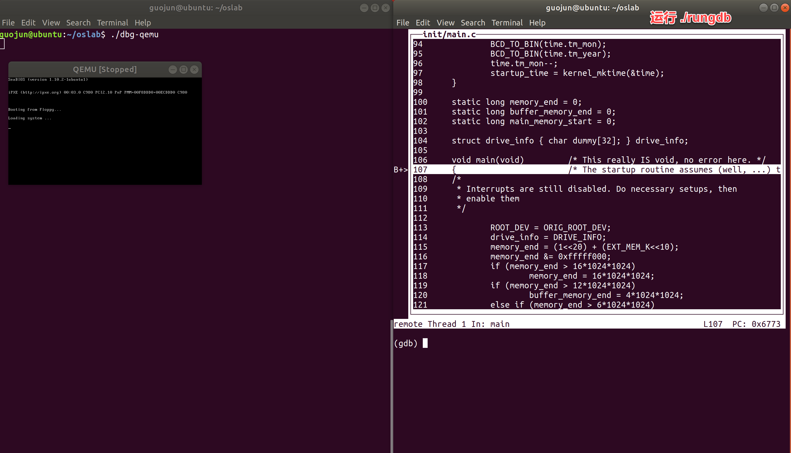

5. Linux 0.11 on Ubuntu¶
5.1. 安装¶
确保你的 Ubuntu 安装和配置都正确以后，现在可以安装实验环境了。
从网站上下载源代码，相应目录里有 setup.sh,
如果想更改安装目录，可以仔细读这个文件。
git clone https://gitee.com/guojunos/oslab2020.git ~/hit-oslab
cd ~/hit-oslab
./setup.sh
警告
请不要使用超级用户执行此安装命令，当有需要时
setup.sh会请求超级用户权限。确认安装之前最好将软件的更新源换成国内的镜像源，更新速度会显著提升。
如果想要跳过软件源更新步骤，请在 ./setup.sh 后加上参数 -s 或 --skip-update。
5.1.1. 新版本实验环境¶
可以使用高版本的
gcc和gdb；支持
Bochs的汇编级调试：命令行与GUI模式；支持
QEMU + GDB的C语言级调试；boot\bootsect.s和boot\setup.s由AS 86改为GNU AS；tools\build.c改为build.sh；Makefile做了相应改动；增加了
gdb-cmd.txt的设置；
注解
oslab2020的实验环境是老师重新整理，因改动较大，难免不会有bug，如果调试使用中出现什么问题，做好记录，及时沟通。经过多轮测试，新实验环境在实验3和实验5有额外需要注意的地方，老师已在指导书中进行了相应的修改与说明。
实验报告中有些涉及上述改动的部分，大家对照理解后，不影响实验。
5.1.2. 老版本实验环境¶
确保你的 Ubuntu 安装和配置都正确以后，现在可以安装实验环境了。
从网站上下载源代码，相应目录里有 setup.sh,
如果想更改安装目录，可以仔细读这个文件。
git clone https://gitee.com/guojunos/hit-oslab.git ~/hit-oslab
cd ~/hit-oslab
./setup.sh
如果想要跳过软件源更新步骤，请在 ./setup.sh 后加上参数 -s 或 --skip-update。
此外，老师推荐大家尝试安装郭子阳同学搭建的一个实验环境，采用了最新的 Bochs 版本，同时，支持 Linux 的多种发行版。
git clone https://gitee.com/cn-guoziyang/oslab.git ~/oslab
5.2. 进入安装目录¶
cd ~/oslab
把当前目录切换到 oslab 下，用 pwd 命令确认，用 ls -l 列目录内容。
本实验的所有内容都在本目录或其下级目录内完成。
.
├── [4.0K] bochs
│ ├── [ 342] linux-0.11.bxrc
│ └── [ 341] linux-0.11-gui.bxrc
├── [ 98] dbg-bochs
├── [ 102] dbg-bochsgui
├── [ 153] dbg-qemu
├── [4.0K] files
│ ├── [ 13K] memtest
│ ├── [1.4K] process.c
│ ├── [8.3K] stat_log.py
│ ├── [4.9K] testlab2.c
│ └── [ 762] testlab2.sh
├── [ 75] gdb-cmd.txt
├── [4.0K] hdc
│ └── [ 0] umounted
├── [ 61M] hdc-0.11.img
├── [ 414] init
├── [4.0K] linux-0.11
│ ├── [4.0K] boot
│ ├── [4.0K] fs
│ ├── [4.0K] include
│ ├── [4.0K] init
│ ├── [4.0K] kernel
│ ├── [4.0K] lib
│ ├── [3.2K] Makefile
│ ├── [ 785] Makefile.header
│ ├── [4.0K] mm
│ └── [4.0K] tools
├── [ 95K] linux-0.11.tar.gz
├── [ 131] mount-hdc
└── [ 256] rungdb
5.3. 编译内核¶
编译内核比编写内核要简单得多。首先要进入 linux-0.11 目录，然后执行：
cd ~/linux-0.11
make all
因为 all 是最常用的参数，所以可以省略，只用 make ，效果一样。
在多处理器的系统上，可以用 -j 参数进行并行编译，加快速度。例如双 CPU 的系统可以：
make -j 2
make 命令会显示很多很多很多的信息，你可以尽量去看懂，也可以装作没看见。只要最后几行中没有 error 就说明编译成功。最后生成的目标文件是一个软盘镜像文件 linux-0.11/Image 。如果将此镜像文件写到一张 1.44MB 的软盘上，就可以启动一台真正的计算机。
linux-0.11 目录下是全部的源代码，很多实验内容都是要靠修改这些代码来完成。修改后需要重新编译内核，还是执行命令：
make all
make 命令会自动跳过未被修改的文件，链接时直接使用上次编译生成的目标文件，从而节约编译时间。但如果重新编译后，你的修改貌似没有生效，可以试试
make clean
make all
make clean 是删除上一次编译生成的所有中间文件和目标文件，确保是在全新的状态下编译整个工程。
5.4. 程序运行¶
在 Bochs 中运行最新编译好的内核很简单，在 oslab 目录下执行：
./dbg-bochs
========================================================================
Bochs x86 Emulator 2.6
Built from SVN snapshot on September 2nd, 2012
========================================================================
Next at t=0
(0) [0x00000000fffffff0] f000:fff0 (unk. ctxt): jmp far f000:e05b ; ea5be000f0
<bochs:1>
如果出现 Bochs 的窗口，继续输入命令 c,里面显示 linux 的引导过程，最后停止在 [/usr/root/]# ，表示运行成功。
5.5. 程序调试¶
内核调试分为两种模式：汇编级调试和 C 语言级调试。
5.5.1. 汇编级调试¶
Bochs 汇编级调试需要执行命令：
./dbg-bochs
这是命令行调试界面。也可以输入
./dbg-bochsgui
进入可视化界面进行调试。二者没有差别。
可以用命令 help 来查看调试系统用的基本命令。更详细的信息请查阅 Bochs 使用手册。
5.5.2. C 语言级调试¶
C 语言级调试稍微复杂一些。由于 Bochs 自带的 gdb 调试安装很繁琐，需要额外编译。因此，这里可以采用 qemu 来进行 C 语言级调试。
首先，执行如下命令：
./dbg-qemu
然后，再打开一个中断窗口，进入 oslab 目录，执行：
cd ~/oslab
./rungdb
整体效果如下图，现在可以进行 gdb 调试。
有关 gdb 的使用和调试技巧，大家可以在网上进行搜索。

图1 qemu进行gdb调试
5.7. 问题及反馈¶
目前在 Ubuntu 64 位机器上可以确保 Bochs 和程序能够正常运行，但如果使用其他 Linux 某些 64 位系统时，出现编译 linux-0.11 缺少某些文件提示时，或是安装高版本的 Bochs 出现问题时，建议大家多在网上搜索解决方案，并尝试将成功的方案记录下来，以便分享。